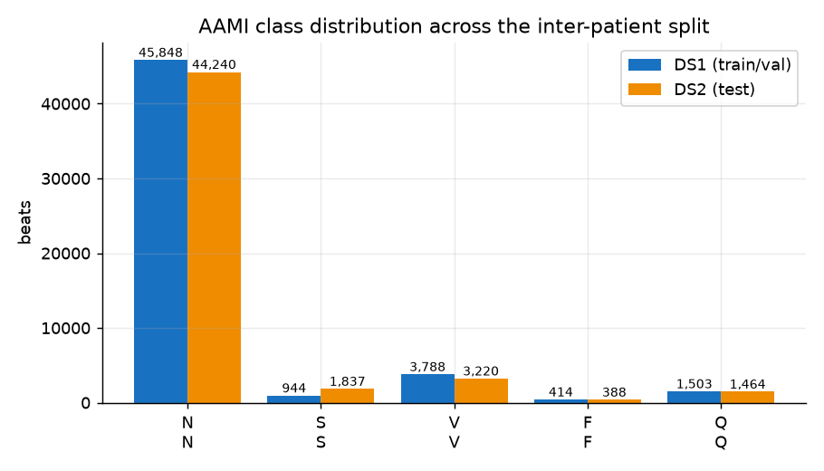
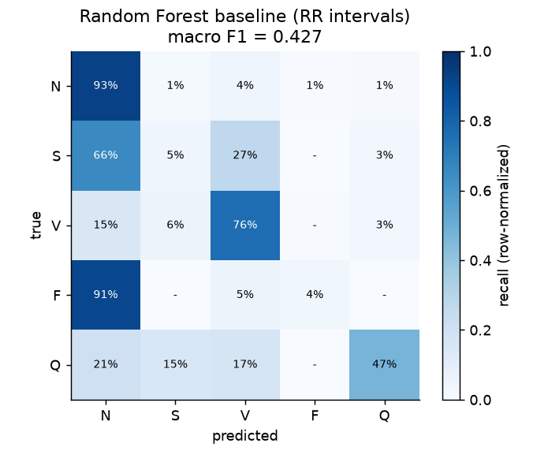
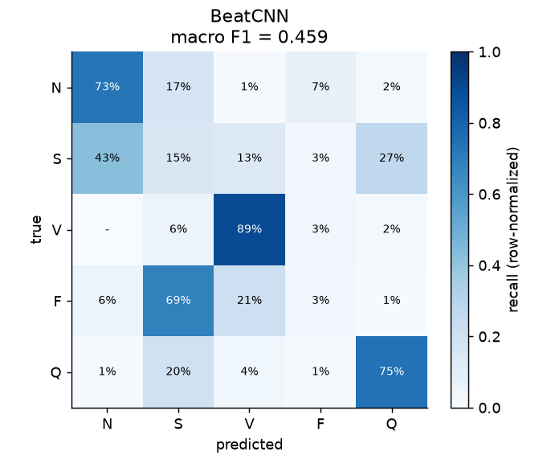
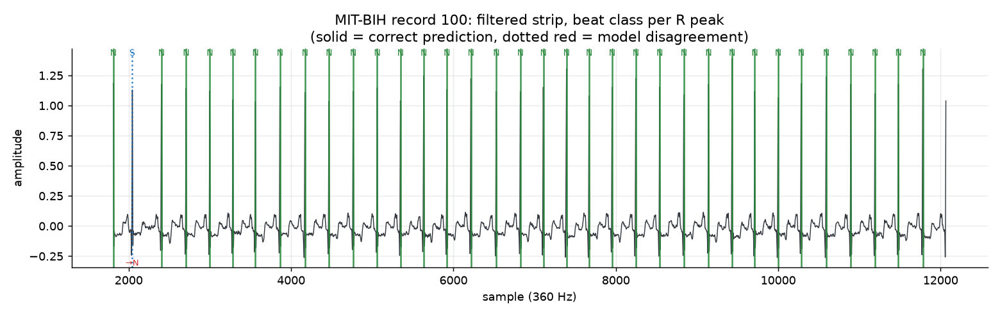
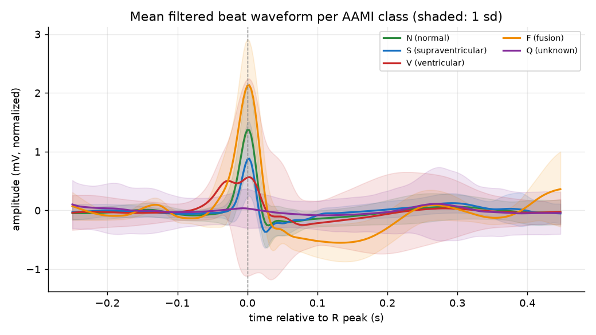
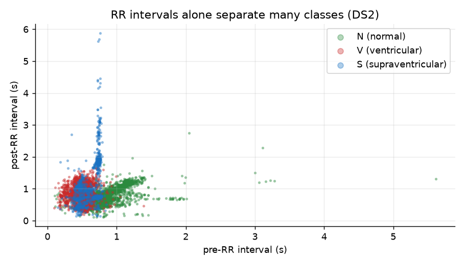
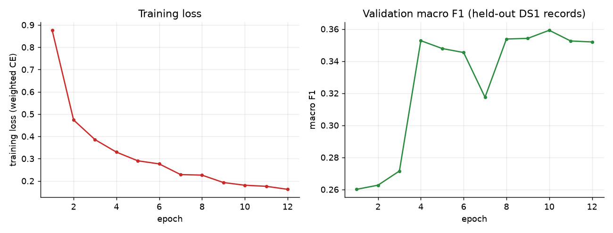

Applied ML portfolio - results console
Five AAMI beat classes from 252-sample morphology windows and RR-interval features, trained patient-disjoint on DS1 and reported once on 51,149 held-out DS2 beats. Every figure below is generated from committed artefacts, never typed by hand.
Two models, one test split, no tuning on it. Macro metrics are unweighted per-class means, so a 388-beat class counts as much as a 44,240-beat one.
| Model | Recall | Precision | Delta F1 (pts) | Macro F1 |
|---|---|---|---|---|
| RandomForest(rr_intervals) | 44.90% | 41.86% | +0.0 pts | 42.69% |
| BeatCNN(1D CNN + RR features)12 epochs, checkpoint at best validation F1, 1288s to train | 51.01% | 45.02% | +3.2 pts | 45.88% |
Macro recallequal weight per class
51.01%
Macro precisiontrust of an alarm
45.02%
Macro F1their harmonic mean
45.88%
Test beatsDS2, 22 held-out patients
51,149
| Class | Precision | Recall | F1 | Recall | Support |
|---|---|---|---|---|---|
| N | 97.49% | 72.97% | 83.47% | 44,240 | |
| S | 3.21% | 15.02% | 5.29% | 1,837 | |
| V | 78.85% | 89.16% | 83.69% | 3,220 | |
| F | 0.39% | 3.35% | 0.69% | 388 | |
| Q | 45.18% | 74.52% | 56.25% | 1,464 |
| Class | Share | Beats | Share |
|---|---|---|---|
| N | 44,240 | 86.49% | |
| V | 3,220 | 6.30% | |
| S | 1,837 | 3.59% | |
| Q | 1,464 | 2.86% | |
| F | 388 | 0.76% |
Left: the optimisation story. Right: where each model puts its mistakes. Rows are normalised, so read across a row as recall and down a column as contamination.
A single aggregate hides whether a model fails everywhere or on a few hard recordings. These rows are recomputed from the committed prediction dump.
| Patient record | Beats | Accuracy | Errors | Most common mistake |
|---|---|---|---|---|
| record 100 | 2,271 | 99.21% | 18 | S->N |
| record 103 | 2,089 | 99.43% | 12 | N->S |
| record 105 | 2,690 | 9.67% | 2,430 | N->S |
| record 111 | 2,132 | 79.22% | 443 | N->S |
| record 113 | 1,794 | 99.83% | 3 | N->S |
| record 117 | 1,537 | 99.67% | 5 | N->Q |
| record 121 | 1,874 | 98.88% | 21 | N->S |
| record 123 | 1,517 | 99.60% | 6 | V->S |
| record 200 | 2,790 | 87.81% | 340 | N->Q |
| record 202 | 2,145 | 62.28% | 809 | N->F |
| record 210 | 2,682 | 18.01% | 2,199 | N->S |
| record 212 | 2,762 | 97.57% | 67 | N->F |
| record 213 | 3,292 | 71.66% | 933 | N->S |
| record 214 | 2,294 | 32.91% | 1,539 | N->F |
| record 219 | 2,312 | 79.37% | 477 | N->S |
| record 221 | 2,461 | 82.36% | 434 | N->F |
| record 222 | 2,631 | 66.51% | 881 | N->S |
| record 228 | 2,140 | 91.21% | 188 | V->S |
| record 231 | 2,009 | 91.04% | 180 | Q->S |
| record 232 | 1,815 | 22.75% | 1,402 | S->N |
| record 233 | 3,149 | 34.46% | 2,064 | N->S |
| record 234 | 2,763 | 94.06% | 164 | N->F |
Generated by python -m ecg_arrhythmia.visualize and committed to the repository, so they render on GitHub Pages with no build step and no network request.







A results page that only lists wins is not a results page. These are the numbers the artefacts give up when read carefully.
The same JSON the page was rendered from, inlined so the numbers above can be checked without cloning the repo.
{
"class_distribution": {
"F": 388,
"N": 44240,
"Q": 1464,
"S": 1837,
"V": 3220
},
"confusion_matrix": {
"labels": [
"N",
"S",
"V",
"F",
"Q"
],
"matrix": [
[
41159,
572,
1730,
312,
467
],
[
1205,
86,
488,
4,
54
],
[
481,
180,
2453,
14,
92
],
[
353,
0,
20,
14,
1
],
[
307,
224,
245,
0,
688
]
]
},
"macro_f1": 0.4269,
"macro_precision": 0.4186,
"macro_recall": 0.449,
"model": "RandomForest(rr_intervals)",
"n_samples": 51149,
"per_class": {
"F": {
"f1-score": 0.0383,
"precision": 0.0407,
"recall": 0.0361,
"support": 388.0
},
"N": {
"f1-score": 0.9382,
"precision": 0.9461,
"recall": 0.9304,
"support": 44240.0
},
"Q": {
"f1-score": 0.4975,
"precision": 0.5284,
"recall": 0.4699,
"support": 1464.0
},
"S": {
"f1-score": 0.0593,
"precision": 0.081,
"recall": 0.0468,
"support": 1837.0
},
"V": {
"f1-score": 0.6015,
"precision": 0.497,
"recall": 0.7618,
"support": 3220.0
}
}
}{
"best_val_macro_f1": 0.3592,
"class_distribution": {
"F": 388,
"N": 44240,
"Q": 1464,
"S": 1837,
"V": 3220
},
"confusion_matrix": {
"labels": [
"N",
"S",
"V",
"F",
"Q"
],
"matrix": [
[
32283,
7594,
399,
3186,
778
],
[
781,
276,
236,
53,
491
],
[
10,
184,
2871,
102,
53
],
[
24,
266,
83,
13,
2
],
[
17,
287,
52,
17,
1091
]
]
},
"epochs_ran": 12,
"macro_f1": 0.4588,
"macro_precision": 0.4502,
"macro_recall": 0.5101,
"model": "BeatCNN(1D CNN + RR features)",
"n_samples": 51149,
"per_class": {
"F": {
"f1-score": 0.0069,
"precision": 0.0039,
"recall": 0.0335,
"support": 388.0
},
"N": {
"f1-score": 0.8347,
"precision": 0.9749,
"recall": 0.7297,
"support": 44240.0
},
"Q": {
"f1-score": 0.5625,
"precision": 0.4518,
"recall": 0.7452,
"support": 1464.0
},
"S": {
"f1-score": 0.0529,
"precision": 0.0321,
"recall": 0.1502,
"support": 1837.0
},
"V": {
"f1-score": 0.8369,
"precision": 0.7885,
"recall": 0.8916,
"support": 3220.0
}
},
"training_seconds": 1288.5
}{
"best_val_macro_f1": 0.3592166365187053,
"epochs": [
1,
2,
3,
4,
5,
6,
7,
8,
9,
10,
11,
12
],
"train_loss": [
0.8760281338075129,
0.47361892918185927,
0.3855360787035536,
0.32943639386447743,
0.2903878230006818,
0.27652630714163223,
0.22856074880827665,
0.22611215811965416,
0.19297918883795273,
0.18072456749042448,
0.17593377891873785,
0.16242750827108984
],
"val_macro_f1": [
0.26010209284025776,
0.2626843872305658,
0.27151127773744943,
0.3527388561296263,
0.3478484692817062,
0.34535162606287617,
0.3174830812033923,
0.3537849765732658,
0.35417676617001764,
0.3592166365187053,
0.3525559093093743,
0.3519457993658513
]
}